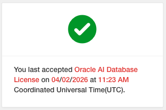

Private AI Services Container 시작하기 - Vector Embedding Service
Getting Started with Private AI Services Container을 기반으로 테스트한 내용입니다.
설치할 VM 준비
- OCI에서 VM을 생성합니다. 블로그와 달리 현재 기본 선택인 Oracle Linux 9를 사용하였습니다.
- Name: privateaivm
- OS: Oracle Linux 9
- Shape: VM.Standard.E5.Flex, 2 OCPU, 24 GB Memory
- Boot volume: 스크립트 설치시 22 GB 필요 경고가 나오니, 기본 100GB로 설치
Boot Volume Resize
-
다음 명령을 실행합니다.
sudo /usr/libexec/oci-growfs -y df -h
Podman 설치
-
Oracle Linux 9 기준 다음 명령으로 설치합니다.
sudo dnf install -y container-tools -
설치된 버전을 확인합니다.
podman versionpodman images-
실행 예시
$ podman version Client: Podman Engine Version: 5.6.0 API Version: 5.6.0 Go Version: go1.25.7 (Red Hat 1.25.7-1.el9_7) Built: Wed Feb 25 15:59:14 2026 OS/Arch: linux/amd64 $ podman images REPOSITORY TAG IMAGE ID CREATED SIZE $
-
-
로그아웃 이웃에도 컨테이너가 계속 실행되도록 Lingering 설정
$ sudo loginctl enable-linger $(whoami) $ loginctl show-user $(whoami) | grep Linger Linger=yes -
컨테이너를 실행후 로그아웃합니다.
podman run -d ghcr.io/oracle/oraclelinux9-nginx:1.20 exit -
VM에 SSH로 재접속하여, 컨테이너가 실행중인지 확인합니다.
podman ps
Oracle Container Registry (OCR)에서 이미지 다운로드 받기
-
Oracle Private AI Services Container 이미지는 OCR(Oracle Container Registry)에서 제공합니다. Oracle Account로 로그인합니다.
-
Access Token이 필요합니다. 없는 경우 오른쪽 상단 유저 정보에서 생성합니다.
-
컨테이너 목록에서 Database > private-ai를 선택합니다.
-
이미지 다운로드를 위해서 라이센스 동의가 필요합니다. 오른쪽 가운데 Oracle AI Database License 경고문구에서 Continue를 클릭하여 동의합니다.

-
로그인후 이미지를 가져오는 것이 되는 지 확인합니다.
podman login container-registry.oracle.com podman pull container-registry.oracle.com/database/private-ai:25.1.5.0.0 -
이미지를 확인합니다.
$ podman images REPOSITORY TAG IMAGE ID CREATED SIZE container-registry.oracle.com/database/private-ai 25.1.5.0.0 72f75a18a7cc 7 days ago 5.22 GB
Private AI Services Container 설치 스크립트 가져오기
-
IMAGEID를 가져옵니다.
IMAGEID=`podman create container-registry.oracle.com/database/private-ai:25.1.5.0.0` -
컨테이너 이미지 내부에 있는 스크립트 파일을 복사하여 꺼냅니다.
podman cp $IMAGEID:/privateai/scripts/privateai-setup-25.1.5.0.0.zip . -
파일을 확인합니다.
[opc@privateaivm ~]$ ls -l total 12 -rw-rw-r--. 1 opc opc 11417 Jun 8 21:50 privateai-setup-25.1.5.0.0.zip ... -
압축해제합니다.
unzip privateai-setup-25.1.5.0.0.zip
HTTP, 기본 모델로 설치하기(Install with HTTP and Default Models)
-
설치합니다.
cd setup mkdir /home/opc/privateai export PRIVATE_DIR=/home/opc/privateai ./configSetup.sh -d $PRIVATE_DIR ./containerSetup.sh -d $PRIVATE_DIR --http-
실행 예시
[opc@privateaivm ~]$ cd setup [opc@privateaivm setup]$ mkdir /home/opc/privateai [opc@privateaivm setup]$ export PRIVATE_DIR=/home/opc/privateai [opc@privateaivm setup]$ ./configSetup.sh -d $PRIVATE_DIR SUCC: Container UID 2001 maps to Host UID 102000 WARN: No security directory passed SUCC: Generated PrivateAI logs directory [opc@privateaivm setup]$ ./containerSetup.sh -d $PRIVATE_DIR --http Using image version 25.1.5.0.0 HTTPS connection enabled: false SUCC: Container started
-
-
컨테이너 실행을 확인합니다.
$ podman ps CONTAINER ID IMAGE COMMAND CREATED STATUS PORTS NAMES ec4e0ec2a824 container-registry.oracle.com/database/private-ai:25.1.5.0.0 25 seconds ago Up 25 seconds 0.0.0.0:8080->8080/tcp privateai -
헬스체크합니다.
curl -i http://localhost:8080/health-
실행 예시
$ curl -i http://localhost:8080/health HTTP/1.1 200 OK date: Tue, 16 Jun 2026 08:33:15 GMT x-ratelimit-limit-requests: 60 x-ratelimit-remaining-requests: 59 x-ratelimit-reset-requests: 1 x-server-id: 89f7f194-5a62-4ed0-95a9-709ec60e42f6 content-length: 0
-
-
컨테이너 이미지에 기본 포함된 모델을 확인합니다.
$ podman exec -it privateai ls -la /privateai/app/oaa_home/linux_x64/models/ total 4426332 drwxrwxr-x. 2 ai_user ai_users 4096 Jun 8 21:51 . drwxrwxr-x. 4 ai_user ai_users 31 Jun 8 21:50 .. -rw-rw-r--. 1 ai_user ai_users 133306253 Jun 8 21:50 all-MiniLM-L12-v2.onnx -rw-rw-r--. 1 ai_user ai_users 436022639 Jun 8 21:50 all-mpnet-base-v2.onnx -rw-r--r--. 1 ai_user ai_users 351664616 Jun 8 21:50 clip-vit-base-patch32-img.onnx -rw-r--r--. 1 ai_user ai_users 255396580 Jun 8 21:50 clip-vit-base-patch32-txt.onnx -rw-rw-r--. 1 ai_user ai_users 1115159937 Jun 8 21:51 multilingual-e5-base.zip -rw-rw-r--. 1 ai_user ai_users 2241000731 Jun 8 21:51 multilingual-e5-large.zip -
기본 로딩된 모델을 확인합니다. 기본 설정으로 실행하면, 기본 포함된 모델들이 모두 로딩됩니다.
curl -sS http://localhost:8080/v1/models | jq .-
실행 예시
{ "data": [ { "id": "clip-vit-base-patch32-img", "modelDeployedTime": "2026-06-16T08:32:25.259052142Z", "modelSize": "335.37M", "modelCapabilities": [ "IMAGE_EMBEDDINGS" ] }, { "id": "clip-vit-base-patch32-txt", "modelDeployedTime": "2026-06-16T08:32:25.259771267Z", "modelSize": "243.57M", "modelCapabilities": [ "TEXT_EMBEDDINGS" ] }, { "id": "multilingual-e5-large", "modelDeployedTime": "2026-06-16T08:32:25.261177079Z", "modelSize": "2.09G", "modelCapabilities": [ "TEXT_EMBEDDINGS" ] }, { "id": "all-minilm-l12-v2", "modelDeployedTime": "2026-06-16T08:32:25.256877237Z", "modelSize": "127.13M", "modelCapabilities": [ "TEXT_EMBEDDINGS" ] }, { "id": "multilingual-e5-base", "modelDeployedTime": "2026-06-16T08:32:25.260511325Z", "modelSize": "1.04G", "modelCapabilities": [ "TEXT_EMBEDDINGS" ] }, { "id": "all-mpnet-base-v2", "modelDeployedTime": "2026-06-16T08:32:25.258269729Z", "modelSize": "415.82M", "modelCapabilities": [ "TEXT_EMBEDDINGS" ] } ] }
-
-
기본 포함된 모델 중 한글을 지원하는 모델을 다음과 같습니다.
- clip-vit-base-patch32-txt: 멀티 모달 벡터 쿼리(예, text + image)시 사용합니다.
- clip-vit-base-patch32-img: 멀티 모달 벡터 쿼리(예, text + image)시 사용합니다.
- all-mpnet-base-v2: 영어 지원
- all-MiniLM-L12-v2: 영어 지원
- multilingual-e5-base: 다국어 지원, 한국어 지원
- multilingual-e5-large: 다국어 지원, 한국어 지원
-
벡터 임베딩 호출을 테스트 해봅니다.
curl -X POST -H "Content-Type: application/json" -d '{"model": "multilingual-e5-base", "input":["안녕하세요"]}' http://localhost:8080/v1/embeddings-
실행 예시
$ curl -X POST -H "Content-Type: application/json" -d '{"model": "multilingual-e5-base", "input":["안녕하세요"]}' http://localhost:8080/v1/embeddings {"data":[{"embedding":[0.02195834,0.046486404,-0.0032452648,0.035856757,0.03248249,-0.027783277,...,0.036063176],"index":0}],"model":"MULTILINGUAL-E5-BASE"}
-
-
성능 메트릭을 테스트합니다.
curl http://localhost:8080/metrics/embeddings_call_latency-
실행 예시
$ curl -sS http://localhost:8080/metrics/embeddings_call_latency | jq . { "name": "embeddings_call_latency", "measurements": [ { "statistic": "COUNT", "value": 1.0 }, { "statistic": "TOTAL_TIME", "value": 2.47 }, { "statistic": "MAX", "value": 2.47 } ], "availableTags": [ { "tag": "model", "values": [ "multilingual-e5-base" ] }, { "tag": "container.id", "values": [ "89f7f194-5a62-4ed0-95a9-709ec60e42f6" ] }, { "tag": "status", "values": [ "success" ] } ], "description": "Call latency in milliseconds", "baseUnit": "seconds" }
-
HTTP, 커스텀 설정으로 배포하기
-
사용할 모델을 준비합니다.
mkdir /home/opc/models IMAGEID=`podman create container-registry.oracle.com/database/private-ai:25.1.5.0.0` podman cp $IMAGEID:/privateai/app/oaa_home/linux_x64/models/multilingual-e5-base.zip /home/opc/models wget https://adwc4pm.objectstorage.us-ashburn-1.oci.customer-oci.com/p/3ZkNN9ORHrCvTFBx5wXh_UnWT5SkudyzqzOFWkEwcDW32yRA1ZbOF-qeG-KQK7ba/n/adwc4pm/b/OML-ai-models/o/multilingual_e5_small_augmented.zip -P /home/opc/models wget https://axvefwoufeow.objectstorage.ap-chuncheon-1.oci.customer-oci.com/n/axvefwoufeow/b/onnx-models/o/multilingual-e5-large-instruct.zip -P /home/opc/models -
모델 zip 파일 내용을 확인해 봅니다.
[opc@privateaivm ~]$ unzip -l /home/opc/models/multilingual_e5_small_augmented.zip Archive: /home/opc/models/multilingual_e5_small_augmented.zip Length Date Time Name --------- ---------- ----- ---- 123021105 10-30-2025 14:01 multilingual_e5_small.onnx 4347 10-30-2025 14:01 README_MULTILINGUAL_E5_SMALL_augmented.txt 1137 10-30-2025 14:01 LICENSE_ATTRIBUTION.txt --------- ------- 123026589 3 files [opc@privateaivm ~]$ unzip -l /home/opc/models/multilingual-e5-base.zip Archive: /home/opc/models/multilingual-e5-base.zip Length Date Time Name --------- ---------- ----- ---- 34031 10-07-2025 20:10 multilingual-e5-base_external_data.json 998925312 10-07-2025 20:10 multilingual-e5-base_0.data 110886912 10-07-2025 20:10 multilingual-e5-base_1.data 5313120 10-07-2025 20:10 multilingual-e5-base.onnx --------- ------- 1115159375 4 files [opc@privateaivm ~]$ unzip -l /home/opc/models/multilingual-e5-large-instruct.zip Archive: /home/opc/models/multilingual-e5-large-instruct.zip Length Date Time Name ---------- ---------- ----- ---- 67261 04-01-2026 10:16 multilingual-e5-large-instruct_external_data.json 1024008192 04-01-2026 10:15 multilingual-e5-large-instruct_largeTensor_0.data 993251328 04-01-2026 10:16 multilingual-e5-large-instruct_0.data 218103808 04-01-2026 10:16 multilingual-e5-large-instruct_1.data 5572894 04-01-2026 10:16 multilingual-e5-large-instruct.onnx ---------- ------- 2241003483 5 files -
설정 파일을 준비합니다.
mkdir /home/opc/config -
/home/opc/config/config.json파일을 생성합니다.-
service_requests_per_min는 기본값이3000(초당 50건)으로 그 이상 요청이 오면, 클라이언트가 HTTP 429 (Too Many Requests) 응답을 받음 -
여기서는
9000으로 늘립니다.
{ "environment":{ "PRIVATE_AI_LOG_LEVEL": "INFO" }, "ratelimiter": { "service_requests_per_min": 9000, "monitor_requests_per_min": 60 }, "models": [ { "modelname": "multilingual-e5-small", "modelfile": "multilingual_e5_small_augmented.zip", "modelfunction": "EMBEDDING", "cache_on_startup": true }, { "modelname": "multilingual-e5-base", "modelfile": "multilingual-e5-base.zip", "modelfunction": "EMBEDDING", "cache_on_startup": true }, { "modelname": "multilingual-e5-large-instruct", "modelfile": "multilingual-e5-large-instruct.zip", "modelfunction": "EMBEDDING", "cache_on_startup": true } ] } -
-
설치합니다.
cd setup mkdir /home/opc/privateai_http_adv export PRIVATE_DIR=/home/opc/privateai_http_adv ./configSetup.sh -d $PRIVATE_DIR -m /home/opc/models -c /home/opc/config/config.json -
설치 위치 아래로 폴더가 생성되고 모델과 설정 파일이 복사됩니다.
$ ls -l $PRIVATE_DIR/Models/ total 3356076 -rw-r--r--. 1 102000 102000 1115159937 Jun 16 08:42 multilingual-e5-base.zip -rw-r--r--. 1 102000 102000 2241004387 Jun 16 08:42 multilingual-e5-large-instruct.zip -rw-r--r--. 1 102000 102000 80450976 Jun 16 08:42 multilingual_e5_small_augmented.zip $ ls -l $PRIVATE_DIR/Config/ total 4 -rw-r--r--. 1 102000 102000 725 Jun 16 08:42 config.json -
컨테이너 실행전에
containerSetup.sh을 수정하여 환경 변수를 추가합니다.PRIVATE_AI_LOG_STDOUT_ENABLED=true을 추가합니다.$CONTAINER_SOFTWARE run -d --name $CONTAINER_NAME \ -e OML_AUTHENTICATION_ENABLED=true \ -e OML_SSL_CERT_TYPE=PKCS12 \ -e OML_HTTPS_ENABLED="$HTTPS_ON" \ -e OML_MAX_SCORE_PAYLOAD=20000000 \ -e OML_MAX_BATCHSIZE=256 \ -e PRIVATE_AI_LOG_STDOUT_ENABLED=true \ $MODELS_VAL \ -
설정을 이용하여, 컨테이너를 실행합니다.
./containerSetup.sh -d $PRIVATE_DIR --http -n privateai_http_adv -p 9000 -
컨테이너 실행을 확인합니다.
$ podman ps CONTAINER ID IMAGE COMMAND CREATED STATUS PORTS NAMES ... 592ed8acad7e container-registry.oracle.com/database/private-ai:25.1.5.0.0 8 seconds ago Up 9 seconds 0.0.0.0:9000->8080/tcp privateai_http_adv -
로그를 확인합니다.
PRIVATE_AI_LOG_STDOUT_ENABLED=true설정이 적용되어 컨테이너 로그가 출력되는 것을 확인합니다.$ podman logs -f privateai_http_adv INFO: Config file set to config.json WARNING: Disabling authentication because HTTPS has been disabled Jun 16, 2026 8:45:03 AM com.oracle.usl.ort.ORTUtil configureLogger INFO: Log directory is: /privateai/logs/6b9ee336-874b-448b-a061-cf534ca55b5d ____ _ _ _ ___ | _ \ _ __(_)_ ____ _| |_ ___ / \ |_ _| | |_) | '__| \ \ / / _` | __/ _ \ / _ \ | | | __/| | | |\ V / (_| | || __/ / ___ \ | | |_| |_| |_| \_/ \__,_|\__\___| /_/ \_\___| Private-AI (version 25.1.5.0.0, build 1.12.15) Jun 16, 2026 8:45:04 AM com.oracle.usl.ort.config.DefaultConfigurationManager <init> INFO: DefaultConfigurationManager constructor with ObjectMapper and configFilePath is called Jun 16, 2026 8:45:04 AM com.oracle.usl.ort.config.DefaultConfigurationManager <init> INFO: Multi Model Mode ... INFO: Skipping secrets configuration because PRIVATE_AI_HTTPS_ENABLED=false 08:46:13.682 [main] INFO io.micronaut.runtime.Micronaut - Startup completed in 69286ms. Server Running: http://0.0.0.0:8080 -
헬스체크합니다.
curl -i http://localhost:9000/health -
설정 파일에 지정한 모델만 로딩된 것을 확인할 수 있습니다.
curl -sS http://localhost:9000/v1/models | jq .-
실행 예시
{ "data": [ { "id": "multilingual-e5-base", "modelDeployedTime": "2026-06-16T08:45:29.106513961Z", "modelSize": "1.04G", "modelCapabilities": [ "TEXT_EMBEDDINGS" ] }, { "id": "multilingual-e5-small", "modelDeployedTime": "2026-06-16T08:45:06.982209265Z", "modelSize": "76.72M", "modelCapabilities": [ "TEXT_EMBEDDINGS" ] }, { "id": "multilingual-e5-large-instruct", "modelDeployedTime": "2026-06-16T08:46:13.262646459Z", "modelSize": "2.09G", "modelCapabilities": [ "TEXT_EMBEDDINGS" ] } ] }
-
-
벡터 임베딩 호출을 테스트 해봅니다.
curl -X POST -H "Content-Type: application/json" -d '{"model": "multilingual-e5-small", "input":["안녕하세요"]}' http://localhost:9000/v1/embeddings curl -X POST -H "Content-Type: application/json" -d '{"model": "multilingual-e5-base", "input":["안녕하세요"]}' http://localhost:9000/v1/embeddings curl -X POST -H "Content-Type: application/json" -d '{"model": "multilingual-e5-large-instruct", "input":["안녕하세요"]}' http://localhost:9000/v1/embeddings
Multi-threaded Scaling 테스트
-
2 OCPU 기준 다음 명령으로 core 수를 확인합니다.
$ nproc 4 -
부하를 쏠 환경에 HTTP 부하 테스트를 위한 툴을 설치합니다. 여기서는 HEY를 사용합니다.
-
다음과 같이 호출합니다. 동시 요청 워커 10개(
-c 10)로 총 10건(-n 10) 호출하는 예시입니다../hey -n 10 -c 10 \ -m POST \ -H 'Content-Type: application/json' \ -d '{"model": "multilingual-e5-large-instruct", "input":["만원짜리와 천원짜리가 길에 떨어져 있으면, 어느 것을 주어야 할까?"]}' \ http://10.0.10.44:9000/v1/embeddings -
Private AI Service Container 로그를 확인합니다. 아래와 같이 nproc 수와 동일한 4개의 thread(25,26,27,28)가 각 요청을 처리합니다. Multi-threaded Scaling에서 설명하는 것처럼 CPU 코어수에 따라 자동으로 thread 풀을 조정합니다.
$ podman logs -f privateai_http_adv 2>&1 | grep 'thread' ... INFO: Started monitoring thread: 28 at 1781600475289 scheduled to signal at 1781600595289 (120000) ms from now INFO: Started monitoring thread: 26 at 1781600475289 scheduled to signal at 1781600595289 (120000) ms from now INFO: Started monitoring thread: 25 at 1781600475290 scheduled to signal at 1781600595290 (120000) ms from now INFO: Started monitoring thread: 27 at 1781600475293 scheduled to signal at 1781600595293 (120000) ms from now INFO: Stopped monitoring thread: 26 at 1781600475656 (367 ms elapsed) ... -
Private AI Service Container가 실행중인 VM의 OCPU를 5로 변경하고, VM 및 컨테이너를 재시작합니다.
-
코어 수를 다시 확인합니다.
$ nproc 10 -
동일하게 다시 부하를 발생시킵니다.
-
컨테이너 로그를 확인합니다. 아래와 같이 10개의 쓰레드가 처리하는 것을 알 수 있습니다.
$ podman logs -f privateai_http_adv 2>&1 | grep 'thread' ... INFO: Started monitoring thread: 38 at 1781600840450 scheduled to signal at 1781600960450 (120000) ms from now INFO: Started monitoring thread: 39 at 1781600840450 scheduled to signal at 1781600960450 (120000) ms from now INFO: Started monitoring thread: 37 at 1781600840450 scheduled to signal at 1781600960450 (120000) ms from now INFO: Started monitoring thread: 35 at 1781600840450 scheduled to signal at 1781600960450 (120000) ms from now INFO: Started monitoring thread: 34 at 1781600840450 scheduled to signal at 1781600960450 (120000) ms from now INFO: Started monitoring thread: 33 at 1781600840450 scheduled to signal at 1781600960450 (120000) ms from now INFO: Started monitoring thread: 32 at 1781600840450 scheduled to signal at 1781600960450 (120000) ms from now INFO: Started monitoring thread: 41 at 1781600840450 scheduled to signal at 1781600960450 (120000) ms from now INFO: Started monitoring thread: 36 at 1781600840450 scheduled to signal at 1781600960450 (120000) ms from now INFO: Started monitoring thread: 40 at 1781600840450 scheduled to signal at 1781600960450 (120000) ms from now INFO: Stopped monitoring thread: 34 at 1781600840729 (279 ms elapsed) INFO: Stopped monitoring thread: 35 at 1781600840771 (321 ms elapsed) INFO: Stopped monitoring thread: 38 at 1781600840809 (359 ms elapsed) INFO: Stopped monitoring thread: 33 at 1781600840814 (364 ms elapsed) INFO: Stopped monitoring thread: 32 at 1781600840823 (373 ms elapsed) INFO: Stopped monitoring thread: 36 at 1781600840837 (387 ms elapsed) INFO: Stopped monitoring thread: 40 at 1781600840841 (391 ms elapsed) INFO: Stopped monitoring thread: 41 at 1781600840852 (402 ms elapsed) INFO: Stopped monitoring thread: 39 at 1781600840856 (406 ms elapsed) INFO: Stopped monitoring thread: 37 at 1781600840861 (411 ms elapsed)
AI Database 26ai에서 호출하기
-
Private AI Service Container가 실행중인 호스트명의 FQDN을 확인합니다.
export HOST=$(hostname -f) echo $HOST-
실행예시
[opc@privateaivm ~]$ export HOST=$(hostname -f) [opc@privateaivm ~]$ echo $HOST privateaivm.sub2d82ee11c.okecluster1.oraclevcn.com
-
-
Database에서 다음 SQL을 실행합니다. credential_name을 사전에 만들지도, http라서 실제 사용하지 않지만, 필수 항목이라 입력합니다.
var embed_params clob; BEGIN :embed_params := '{ "provider": "privateai", "url": "http://privateaivm.sub2d82ee11c.okecluster1.oraclevcn.com:9000/v1/embeddings", "credential_name": "ORACLE_PRIVATE_AI_CRED", "model": "multilingual-e5-base", }'; END; / SELECT DBMS_VECTOR.UTL_TO_EMBEDDING('hello', json(:embed_params)) AS embedding;-
실행 결과
-------------------------------------------------------------------------------- [2.48571374E-002,3.78951728E-002,-5.52070094E-003,2.99805235E-002,3.81360129E-002,-4.35146764E-002,-1.29409051E-002,...
-
-
호출 속도를 테스트합니다.
DECLARE TYPE t_str_array IS TABLE OF VARCHAR2(200); v_arr t_str_array := t_str_array('multilingual-e5-base'); v_sql VARCHAR2(4000); v_start NUMBER; v_end NUMBER; v_total NUMBER; v_avg NUMBER; v_embedding VECTOR; BEGIN FOR i IN 1 .. v_arr.COUNT LOOP :embed_params := '{ "provider": "privateai", "url": "http://privateaivm.sub2d82ee11c.okecluster1.oraclevcn.com:9000/v1/embeddings", "credential_name": "ORACLE_PRIVATE_AI_CRED", "model": "' || TO_CHAR(v_arr(i)) || '" }'; v_total := 0; FOR i IN 1 .. 1 LOOP v_start := DBMS_UTILITY.GET_TIME; UPDATE rstr_info_test SET vector_description = dbms_vector.utl_to_embedding(description, json(:embed_params)) WHERE ROWNUM <= 1000; v_end := DBMS_UTILITY.GET_TIME; v_total := v_total + (v_end - v_start); --DBMS_OUTPUT.PUT_LINE(TO_CHAR(v_embedding)); END LOOP; v_avg := v_total / 1; DBMS_OUTPUT.PUT_LINE(LPAD(v_arr(i), 40) || ' | Elapsed (sec): ' || LPAD(TO_CHAR((v_avg)/100, 'FM9990.000'), 8)); COMMIT; END LOOP; END; /-
결과
Model ECPU Service Name 1000건 (초) multilingual-e5-small 4 TP 26.330 multilingual-e5-base 4 TP 53.300 multilingual-e5-large-instruct 4 TP 134.130 -
Private AI Service Container 로그 - 1개 쓰레드씩 순차처리됨
INFO: Started monitoring thread: 37 at 1777466092228 scheduled to signal at 1777466212228 (120000) ms from now INFO: Stopped monitoring thread: 37 at 1777466092368 (140 ms elapsed) INFO: Started monitoring thread: 38 at 1777466092391 scheduled to signal at 1777466212391 (120000) ms from now INFO: Stopped monitoring thread: 38 at 1777466092551 (160 ms elapsed) INFO: Started monitoring thread: 39 at 1777466092573 scheduled to signal at 1777466212573 (120000) ms from now INFO: Stopped monitoring thread: 39 at 1777466092674 (101 ms elapsed) ...
-
-
Private AI Service Container에서 여러개의 쓰레드가 동시에 처리되도록 병렬 호출 속도를 테스트합니다.
DECLARE TYPE t_str_array IS TABLE OF VARCHAR2(200); v_arr t_str_array := t_str_array('multilingual-e5-base'); v_sql CLOB; v_start NUMBER; v_end NUMBER; BEGIN FOR i IN 1 .. v_arr.COUNT LOOP v_sql := ' UPDATE rstr_info_test SET vector_description = dbms_vector.utl_to_embedding( description, json(''{ "provider": "privateai", "url": "http://privateaivm.sub2d82ee11c.okecluster1.oraclevcn.com:9000/v1/embeddings", "credential_name": "ORACLE_PRIVATE_AI_CRED", "model": "' || v_arr(i) || '" }'') ) WHERE rowid BETWEEN :start_id AND :end_id AND rowid IN ( SELECT rowid FROM rstr_info_test WHERE ROWNUM <= 1000 ); '; BEGIN DBMS_PARALLEL_EXECUTE.DROP_TASK('EMBED_TASK'); EXCEPTION WHEN OTHERS THEN NULL; END; DBMS_PARALLEL_EXECUTE.CREATE_TASK('EMBED_TASK'); DBMS_PARALLEL_EXECUTE.CREATE_CHUNKS_BY_ROWID( TASK_NAME => 'EMBED_TASK', TABLE_OWNER => USER, TABLE_NAME => 'RSTR_INFO_TEST', BY_ROW => TRUE, CHUNK_SIZE => 10 ); v_start := DBMS_UTILITY.GET_TIME; DBMS_PARALLEL_EXECUTE.RUN_TASK( TASK_NAME => 'EMBED_TASK', SQL_STMT => v_sql, LANGUAGE_FLAG => DBMS_SQL.NATIVE, PARALLEL_LEVEL => 10 ); v_end := DBMS_UTILITY.GET_TIME; DBMS_OUTPUT.PUT_LINE('Elapsed: ' || (v_end - v_start)/100); DBMS_PARALLEL_EXECUTE.DROP_TASK('EMBED_TASK'); END LOOP; END; /-
실행결과
- ADB, 4 ECPU, Service Name=TP
- 병렬 처리관련 Service Concurrency Limits for ECPU Compute Model 참조
PARALLEL_LEVEL multilingual-e5-small
1000건 처리 걸린 시간(초)multilingual-e5-base
1000건 처리 걸린 시간(초)multilingual-e5-large-instruct
1000건 처리 걸린 시간(초)1 26.05 73.87 123.30 2 12.47 36.06 108.41 5 6.11 24.11 93.12 10 6.66 24.20 93.23 -
Private AI Service Container 로그
- PARALLEL_LEVEL 10기준
- 여러개 쓰레드씩 동시에 요청메시지 수신됨, 동시처리됨
INFO: Started monitoring thread: 41 at 1778340679174 scheduled to signal at 1778340799174 (120000) ms from now INFO: Started monitoring thread: 32 at 1778340679261 scheduled to signal at 1778340799261 (120000) ms from now INFO: Started monitoring thread: 34 at 1778340679263 scheduled to signal at 1778340799263 (120000) ms from now INFO: Started monitoring thread: 33 at 1778340679263 scheduled to signal at 1778340799263 (120000) ms from now INFO: Started monitoring thread: 35 at 1778340679266 scheduled to signal at 1778340799266 (120000) ms from now INFO: Started monitoring thread: 36 at 1778340679314 scheduled to signal at 1778340799314 (120000) ms from now INFO: Started monitoring thread: 37 at 1778340679375 scheduled to signal at 1778340799375 (120000) ms from now INFO: Started monitoring thread: 38 at 1778340679377 scheduled to signal at 1778340799377 (120000) ms from now INFO: Started monitoring thread: 39 at 1778340679380 scheduled to signal at 1778340799380 (120000) ms from now INFO: Started monitoring thread: 40 at 1778340679383 scheduled to signal at 1778340799383 (120000) ms from now INFO: Stopped monitoring thread: 41 at 1778340679699 (525 ms elapsed) INFO: Started monitoring thread: 41 at 1778340679728 scheduled to signal at 1778340799728 (120000) ms from now ...
-
Python 코드로 임베딩해서 DB 업데이트하기
배치 처리가 되는 지 확인 테스트
-
Python을 설치합니다. 3.12 버전을 사용합니다.
sudo yum install -y python3.12 sudo yum install python3.12-pip -y python3.12 -m ensurepip pip3.12 install --upgrade pip cat <<EOF >> ~/.bash_profile alias pip='pip3.12' alias python='python3.12' EOF source ~/.bash_profile -
OpenAI Python 클라이언트 설치
pip install openai -
연결 테스트 - HTTP 연결시 api_key는 필요없이만, 필수 항목이라 입력
from openai import OpenAI my_url = "http://privateaivm.sub2d82ee11c.okecluster1.oraclevcn.com:9000/v1" my_key = "Any string will do" client = OpenAI(base_url=my_url, api_key=my_key) models = client.models.list() for model in models: print(f"- {model.id}, {model.modelSize}, {model.modelCapabilities}")-
실행결과
- multilingual-e5-base, 1.04G, ['TEXT_EMBEDDINGS'] - multilingual-e5-large-instruct, 2.09G, ['TEXT_EMBEDDINGS']
-
-
임베딩 테스트
from openai import OpenAI my_url = "http://privateaivm.sub2d82ee11c.okecluster1.oraclevcn.com:9000/v1" my_key = "Any string will do" my_sentence = "안녕하세요" my_model = "multilingual-e5-large-instruct" client = OpenAI(base_url=my_url, api_key=my_key) embeddings = client.embeddings.create(model=my_model,input=my_sentence) print(embeddings.data[0].embedding) -
배치로 처리하기
from openai import OpenAI my_url = "http://privateaivm.sub2d82ee11c.okecluster1.oraclevcn.com:9000/v1" my_key = "Any string will do" my_model = "multilingual-e5-large-instruct" client = OpenAI(base_url=my_url, api_key=my_key) response = client.embeddings.create( model=my_model, input=[ "text1", "text2", "text3" ] ) for i, embedding in enumerate(response.data): print(f"{i}: {embedding.embedding[:5]} ...")-
실행결과
0: [0.00903765, 0.04617005, 0.0025545114, -0.05463993, 0.058799524] ... 1: [0.014997475, 0.046555214, -0.005457429, -0.048455324, 0.044321958] ... 2: [0.013243982, 0.03413066, -0.014309111, -0.055250105, 0.045067724] ... -
Private AI Service Container 로그 - 한 건으로 처리됨
INFO: Started monitoring thread: 41 at 1777468033113 scheduled to signal at 1777468153113 (120000) ms from now INFO: Stopped monitoring thread: 41 at 1777468033163 (50 ms elapsed)
-
배치 및 병렬 처리시 속도 테스트
-
Python 코드를 작성합니다. 연결에 필요한 정보는 알맞게 수정합니다.
import array import time import sys import math import oracledb import asyncio from openai import DefaultAioHttpClient from openai import AsyncOpenAI my_url = "http://privateaivm.sub2d82ee11c.okecluster1.oraclevcn.com:9000/v1" my_key = "Any string will do" MODEL="multilingual-e5-small" TARGET_ROWS = 1000 CONCURRENCY = 10 BATCH_SIZE = 1 dsn = "db_tp" sem = asyncio.Semaphore(CONCURRENCY) def get_db_conn(): conn=oracledb.connect( user="VECTOR", password="...", dsn="adb26aipe_tp", config_dir="./wallet", wallet_location="./wallet", wallet_password="") return conn def fetch_target_rows(): conn = get_db_conn() try: cursor = conn.cursor() cursor.execute(""" SELECT id, description FROM rstr_info_test FETCH FIRST :n ROWS ONLY """, n=TARGET_ROWS) return cursor.fetchall() finally: conn.close() def split_chunks(rows, n): size = math.ceil(len(rows) / n) return [rows[i:i + size] for i in range(0, len(rows), size)] async def process_chunk(rows): if not rows: return 0 async with sem: async with AsyncOpenAI( base_url=my_url, api_key=my_key, http_client=DefaultAioHttpClient(), ) as client: for i in range(0, len(rows), BATCH_SIZE): batch_rows = rows[i:i + BATCH_SIZE] ids = [r[0] for r in batch_rows] texts = [r[1] for r in batch_rows] response = await client.embeddings.create( model=MODEL, input=texts ) update_data = [ (array.array("f", emb.embedding), row_id) for row_id, emb in zip(ids, response.data) ] def update_db(): conn = get_db_conn() try: cursor = conn.cursor() cursor.executemany(""" UPDATE rstr_info_test SET vector_description = :1 WHERE id = :2 """, update_data) conn.commit() except Exception: conn.rollback() raise finally: conn.close() await asyncio.to_thread(update_db) return len(rows) async def main(): start = time.time() rows = fetch_target_rows() if not rows: print("no rows") return chunks = split_chunks(rows, CONCURRENCY) results = await asyncio.gather(*(process_chunk(chunk) for chunk in chunks)) elapsed = time.time() - start print(f"{MODEL}, {sum(results) }, {CONCURRENCY}, {BATCH_SIZE}, {elapsed:.3f}") asyncio.run(main()) -
실행하고, 결과를 확인합니다.
-
실행결과
- ADB, 4 ECPU, Service Name=TP
- 병렬 처리관련 Service Concurrency Limits for ECPU Compute Model 참조
- Private AI Services Container: 5 OCPU(10 vCPU)
- Private AI Services Container가 지원하는 쓰레드에 따라 클라이언트의 CONCURRENCY를 높히고, 배치처리도 하면 좋지만, 임베디 모델의 무게에 따라 건당 처리시간이 길다면(그때 Private AI Services Container의 CPU 사용량도 높습니다.) 둘다 효과가 없어집니다.
CONCURRENCY Batch multilingual-e5-small
1000건 처리 걸린 시간(초)multilingual-e5-base
1000건 처리 걸린 시간(초)multilingual-e5-large-instruct
1000건 처리 걸린 시간(초)1 1 104.541 125.091 180.985 2 1 45.781 65.583 126.216 5 1 23.973 32.945 93.826 10 1 20.519 24.858 90.861 1 1 93.988 114.906 182.792 1 2 52.807 76.212 155.329 1 5 22.822 56.070 152.514 1 10 17.945 60.013 161.692 2 1 49.615 63.850 136.105 2 2 25.331 48.565 125.588 2 5 12.646 42.780 151.985 2 10 9.153 43.098 168.482 5 1 22.786 34.036 94.869 5 2 13.099 31.225 111.977 5 5 7.329 34.722 137.553 5 10 5.766 39.459 159.322
-
이 글은 개인으로서, 개인의 시간을 할애하여 작성된 글입니다. 글의 내용에 오류가 있을 수 있으며, 글 속의 의견은 개인적인 의견입니다.